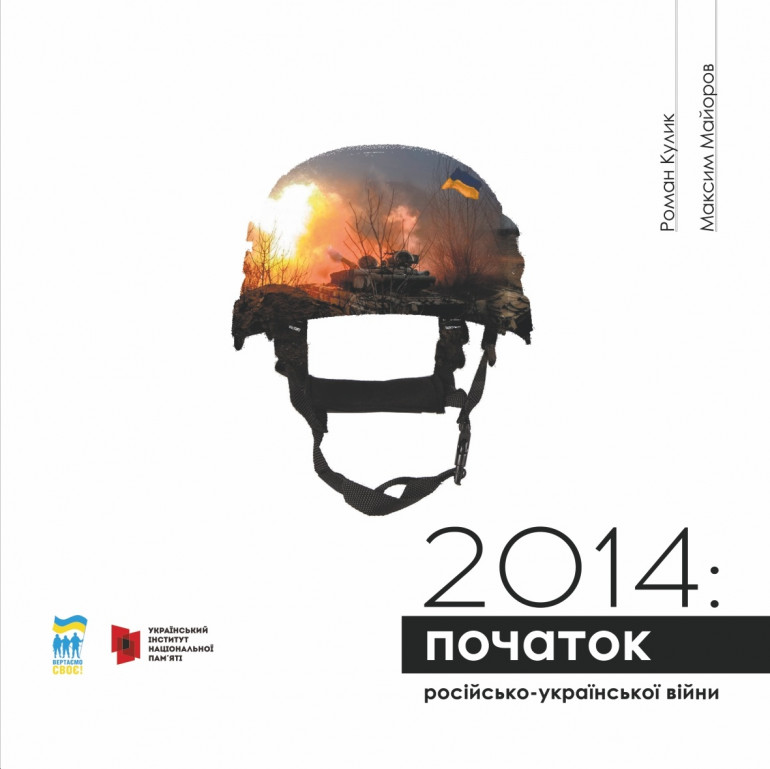

Передумови
Проросійські демонстрації
Протягом часу з березня по травень 2014 року по всій території України прокотилася хвиля кривавих мітингів, що спровокувала росія, відомих під назвою "російська весна". Ці акції спричинили події, що відбулися під час "Євромайдану", та збройним захопленням росією Кримського півострову. Основними гаслами та бажаннями протестувальників було розділення Української території або приєднання до російської федерації. Висувалися безліч різноманітних вимог, що при їх застосуванні могли загрожувати цілісності Українських територій. В них брали участь як звичайні місцеві жителі, так і завезені з території нашого ворога актори, що ще більше нагнітали ситуацію. Паралельно з ними проходили пікети на підтримку приєднання України до Європейського Союзу. Доволі часто ці мітинги переростали у велетенські бійки, деякі з яких завершувалися смертями. Перші відомі смертельні випадки було зареєстровано на сході України. Зокрема, доволі відомий активіст Дмитро Чернявський помер на проукраїнському мітингу. Найбільша кількість протестів відбувалася на сході [17, 18].
11 березня міністр оборони Ігор Тенюк оголосив, що російські військові розгорнули 220 000 військових для навчань поблизу Криму та східного кордону України. У той же час, лише 6 000 з 41 000 військовослужбовців української армії є боєздатними [19, 288].
16 березня, в день проведення росією референдуму в Криму, проросійські бойовики розмістили в інтернеті повідомлення про готовність розпочати війну в разі "загрози південному сходу" та ультиматум щодо виведення українських військових формувань і техніки з "їхньої території". Через кілька днів російські ЗМІ опублікували інтерв'ю з представником озброєного угруповання, яке називає себе "Координаційним штабом Луганської області". У ньому бойовики заявили, що готові розгорнути 20 000 озброєних солдатів і наполягають на проведенні референдуму, на якому буде вирішено, чи повинна Луганська область увійти до складу російської федерації, чи залишитися у складі України, і що регіон повинен отримати "федеративний статус"" [20].
18 березня 2014 року колишній прем'єр-міністр Арсеній Яценюк виступив зі зверненням до населення півдня і сходу України з метою зняття соціальної напруги, в якому гарантував незмінність статусу російської мови як регіональної, передав широкі фінансові повноваження на обласний і районний рівень. Він також оголосив про намір значно децентралізувати владу, передавши також право вирішувати освітні, культурні, історичні та героїчні питання. Щодо зовнішньої політики, він висловила намір відновити добрі відносини з росією, підкреслив односторонній характер економічних преференцій ЄС в рамках Угоди та заявив, що Україна не має наміру вступати до НАТО [21, 22].
На початку квітня 2014 року проросійські групи значно загострили ситуацію: 6 квітня вони захопили будівлю СБУ в Луганську, а 7 квітня ДНР у Донецьку та КПР у Харкові "проголосили державний суверенітет". Після цього Міністерство внутрішніх справ розгорнуло спецпідрозділи з вінницького "Ягуара" і вранці 8 квітня звільнило захоплену Харківську обласну державну адміністрацію. У Запоріжжі проросійські мітинги не відновилися після того, як 13 квітня місцеві активісти закидали учасників проросійського мітингу яйцями в "яєчну неділю". В Одесі мітинги та акції тривали до початку травня, але після трагічного інциденту 2 травня, в якому загинуло 49 осіб як з української, так і з проросійської сторони, мітинг було призупинено [23, 24].
Проголошення «народних республік»
Протягом 7–27 квітня, подібно «Кримському сценарію», було проголошено ряд «народних республік». 7 квітня учасники зборів у Донецькій ОДА, що назвалися «народною радою», проголосили «Донецьку народну республіку». Учасники зборів зачитали тексти «декларації про суверенітет», «акту про державну самостійність», після чого звернулися до путіна із закликом «ввести миротворчі війська», і призначили на 11 травня референдум з приводу входження до складу рф [25, 26, 27].
День 11 травня 2014 року Європейський суд з прав людини визначив як дату, з якої «території, захоплені сепаратистами, перебували під контролем російської федерації», отже за події на захопленій території після 11 травня 2014 відповідальна росія, незважаючи на те, що Донбас був і залишається під суверенітетом України [28].
«Харківську народну республіку» також було проголошено 7 квітня, а спроба проголосити Одеську відбулася 22 квітня. 27 квітня було проголошено «Луганську народну республіку» [29, 30, 31].
15 травня 2014 року Генеральною прокуратурою України дані бандформування було кваліфіковано як терористичні організації, які насильницько-збройним шляхом здійснюють терор на сході України [32].
Що таке новоросія
17 квітня 2014 року Президент рф володимир путін, відповідаючи на запитання журналіста на щорічній пресконференції, зробив заяву, що «південний схід України – це новоросія», а «Харків, Донецьк, Луганськ, Херсон, Миколаїв та Одеса були передані до складу України радянським урядом» [33].
Надалі ватажки проросійських формувань на Донбасі, російські медіаресурси та агітаційні матеріали систематично апелювали до карт з варіаціями поділу України і створеною на її територіях новоросією [34].
Потім сталося багато важливих подій: захоплення росіянами Слов'янська та Краматорська, початок антитерористичної операції, спроба штурму військової частини Маріуполя, бої під Слов'янськом, сутички у Маріуполі, Червоноармійську і референдуми, засідка під Маячкою, напади бойовиків 22 травня, штурм луганських прикордонників та авіаудар по будівлі ОДА, наступ сил АТО 3 червня, напади на прикордонні застави на кордоні України з росією, звільнення Маріуполя, бій під Металістом 17 червня, визволення Красного Лиману [1].
Український контрнаступ (1 липня - серпень 2014 року)
Зважаючи на позицію російського керівництва щодо ігнорування домовленостей Тристоронньої контактної групи з мирного врегулювання ситуації в Донецькій і Луганській областях та продовження просування проросійських військових формувань вглиб української території, 1 липня 2014 року українські силовики перейшли в активний контрнаступ на всіх фронтах конфлікту і розпочали повномасштабну військову операцію з метою повної ізоляції регіону від військових поставок з російської федерації [1].
Станом на 4 липня українські сили звільнили 17 населених пунктів з початку антитерористичної операції, а 23 з 36 районів Донецької (13 з 18 районів) та Луганської (10 з 18 районів) областей перебували під контролем урядових сил [35].
Масштабне вторгнення російської регулярної армії
11 серпня 2014 року Олександр Захарченко зробив заяву про те, що "сили ДНР готові до наступальних дій" і що в найближчі кілька днів розпочнеться "широкий традиційний наступ". Тоді російська преса поширила інформацію про те, що "ополчення і самооборона" придбали понад 200 одиниць бронетехніки для використання в оголошеному "контрнаступі" [36, 37].
12 серпня 2014 року на полі бою війни на Донбасі вперше з'явилися зразки виключно російської бронетехніки. Це танк Т-72, який на той час не перебував на озброєнні Збройних сил України, та російський бронетранспортер БТР-82А, зафіксований у боях під Сніжним, під Малинівкою та під Степанівкою, і який належить батальйонній тактичній групі 17-ї та 18-ї мотострілецьких бригад російської армії. Відомо, що того дня під Сніжним було підбито щонайменше два Т-72, один з яких був знищений тараном танка лейтенанта Абрамовича з 30-ї бригади [38].
Всі ці події 2014 року стали початком трагедії, що сталася у 2022 році. Вони дали великий поштовх до виконання злочинних планів росії. Жертвою ворога стала також нездатність України адекватно відповісти на анексію своєї території. Це було пов'язано із застарілим обладнанням та непідготовленістю, а також недовірою до того, що "російські брати" можуть напасти. Однак найголовнішою причиною втрати території на сході України стала широка інформаційна кампанія росії. А згодом російські агресори і терористи збройно і криваво захопили частини кількох областей України.